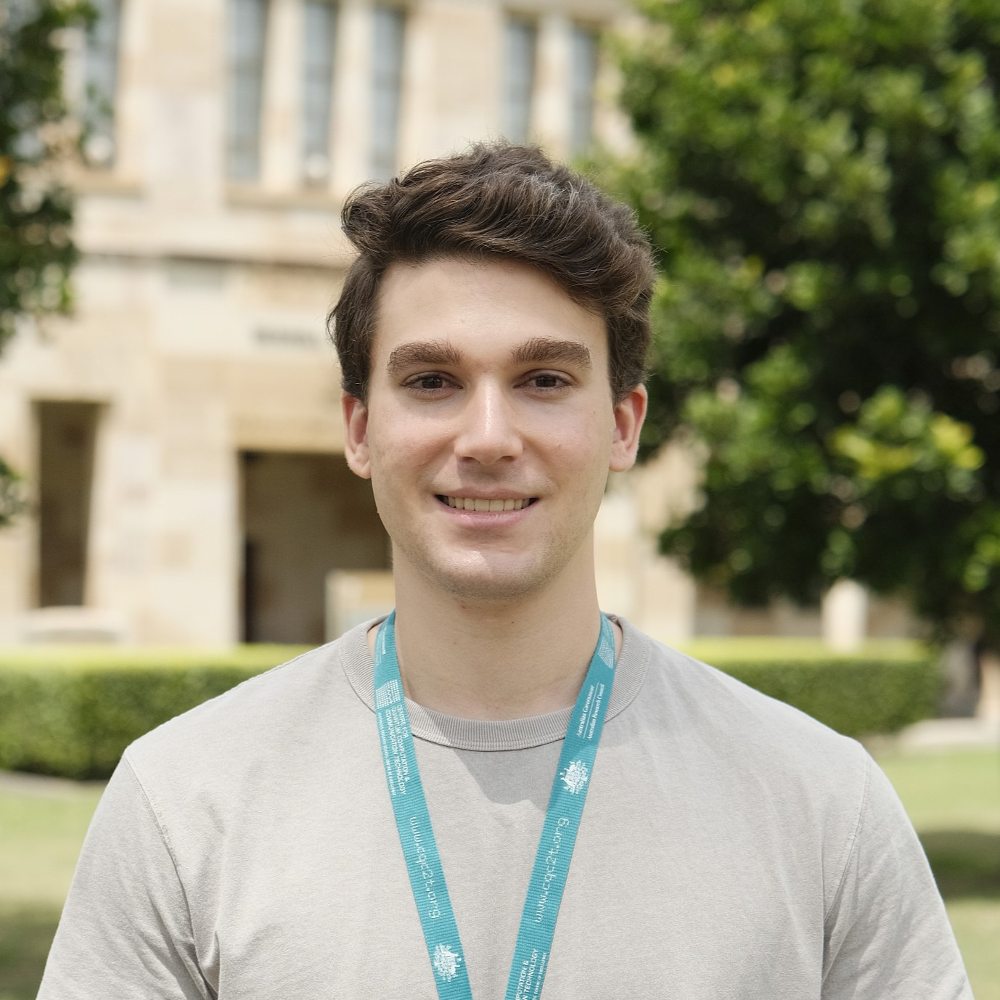

n.zaunders@uq.edu.au
Google Scholar
Add me on LinkedIn
Visit the QuOTh-QI group page
| I am a PhD student at the University of Queensland, studying within the ARC Centre of Excellence for Quantum Computation and Communication Technologies (CQC2T). Under the leadership of CQC2T Node Director and QuOTh-QI group lead Professor Timothy C. Ralph, and in collaboration with the University of New South Wales and internationally with the Northrop Grumman Corporation, I work towards improving the fundamental viability, practicality and utility of quantum communications technologies such as quantum key distribution. My research also focuses heavily on the practical implementation and real-life problems associated with using quantum technologies in the field, and how these problems can be realistically addressed to create useful fully-quantum or quantum-enhanced technologies that can be feasibly deployed in the real world. |  |
Talk
Simultaneous Quantum-Classical Communications
IEEE 2024 International Conference on Quantum Communications, Networking, and Computing
Best Paper Award
Simultaneous Quantum-Classical Communications
IEEE 2024 International Conference on Quantum Communications, Networking, and Computing
Honours Research Scholarship
Australian Institute of Nuclear Science and Engineering
Scholarship grant to assist in research performed at the ANSTO neutron-beam facilities
(Neutron scattering analysis of time-dependent skyrmion formation within multiferroic chiral magnets)
Undergraduate Research Scholarship
Sydney Quantum Academy
Scholarship grant to assist in research performed with the ARC Centre of Excellence for Future
Low-Energy Electronics Technologies (FLEET), UNSW node
(Fabrication of graphene bi- and trilayer vdW heterostructures via mechanical exfoliation)